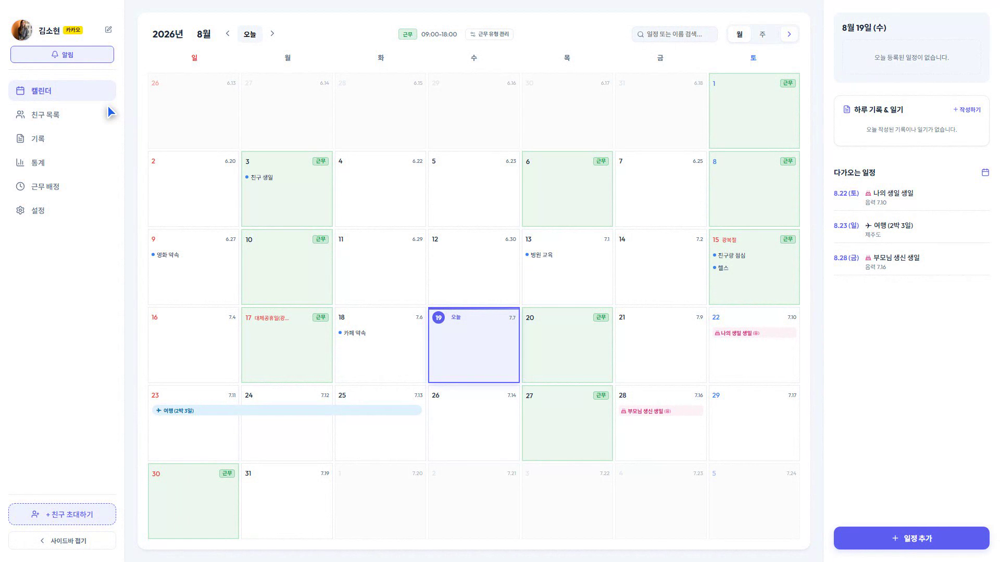
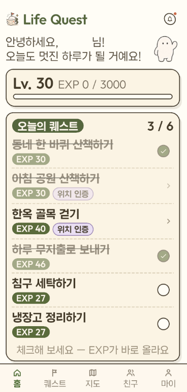
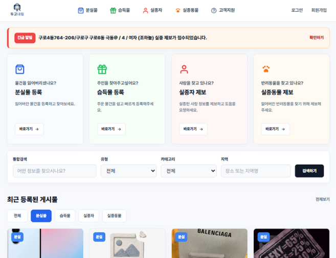
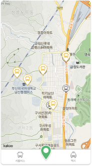

WePlan
2026.06.15 - 2026.08.19개인 일정과 교대 근무를 한눈에 관리하고, 구성원 간 공유와 규칙 기반 근무표 자동 배정을 지원하는 통합 캘린더 플랫폼입니다.

Spring Boot와 JPA를 활용해 REST API와 비즈니스 로직을 구현하고, 공공데이터를 서비스 데이터로 연결한 경험이 있습니다.
Kakao Maps API와 위치 데이터를 연동하고, WebSocket을 활용해 실시간 지도 마커를 처리하는 서비스를 구현했습니다.
Spring Boot 백엔드부터 Flutter 화면까지 구현하며, 팀장으로서 기능 분담과 프로젝트 통합을 이끌었습니다.
개인 일정과 교대 근무를 한눈에 관리하고, 구성원 간 공유와 규칙 기반 근무표 자동 배정을 지원하는 통합 캘린더 플랫폼입니다.

현실의 활동을 퀘스트처럼 수행하고 경험치, 레벨, 도감과 업적을 수집하며 성장하는 라이프 RPG 플랫폼입니다.

분실물, 습득물, 실종자, 실종동물을 한곳에서 찾고 제보할 수 있는 위치 기반 통합 매칭 플랫폼입니다.

실시간 셔틀버스의 위치(위도·경도) 데이터를 수집·관리하고, WebSocket 및 API를 통해 실시간 마커 정보를 지도에 연동할 수 있도록 지원하는 백엔드 프로젝트입니다.

프로젝트 및 백엔드 개발 관련 협업 제안은 언제든 연락해 주세요.